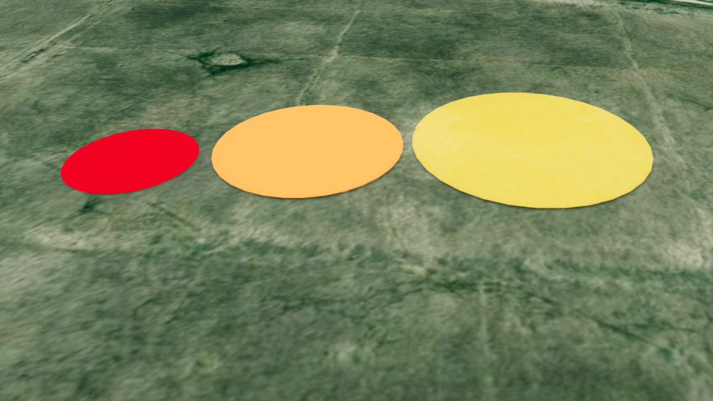

원 (Circle)
목차

U3dCircle은 지정한 좌표에 납작한 원판을 만듭니다.
영향 반경, 작업 구역, 관측 범위처럼 지면 위 영역을 표시할 때 사용합니다.
원판은 지면과 나란히 눕혀진 상태로 만들어지므로, 위치만 지정하면 바로 지도 위에 펼쳐집니다.
1. 원 생성하기
U3dCircle 생성자로 객체를 만들고, U3dVectorLayer.addGeometry로 레이어에 등록한 뒤 위치를 지정하면 화면에 표시됩니다.
레이어를 만들고 도형을 등록·제거하는 방법은 3D Geometry 시작하기 - 도형 등록하고 제거하기에서 설명합니다.
반지름(radius) 단위는 미터입니다.
API
U3dCircle(opt) : 원 객체를 생성하는 생성자
매개변수
opt(object) : 원 생성 옵션opt.name(string) : 객체 이름. 지정하지 않으면 자동으로 생성됩니다opt.radius(number) : 반지름(m). 기본값:5opt.segments(number) : 세분화 정도. 클수록 원에 가까워집니다. 최소3. 기본값:32opt.color(ColorRepresentation) : 색상. 기본값:'#ff0000'opt.opacity(number) : 투명도(0~1). 기본값:0.7opt.wireframe(boolean) : 와이어프레임 표시 여부. 기본값:falseopt.style(object) : 겹쳐 그리기 옵션opt.style.depthTest(boolean) : 깊이 검사 여부. 기본값:trueopt.style.depthWrite(boolean) : 깊이 기록 여부. 기본값:trueopt.style.renderOrder(number) : 렌더 순서opt.coordinates(Array<GeoPositionVector3>) : 위치 좌표 배열 (위경도, EPSG:4326)opt.properties(KeyValue) : 사용자 정의 속성정보
1. 원 생성 예제
반지름 30m의 반투명 원을 만들어 지면에 놓는 예제입니다.opacity를 낮추면 아래 지형이 비쳐 영역 표시로 쓰기 좋습니다.
const app = new GeOnDT.U3dAPP({containername: 'map'});
const vectorLayer = new GeOnDT.vector.U3dVectorLayer({name: 'vector'});
const circle = new GeOnDT.geom.U3dCircle({
name: 'circle_01',
radius: 30, // 반지름 30m
segments: 64, // 매끄러운 원
color: '#3498db',
opacity: 0.5
});
vectorLayer.addGeometry(circle); // 벡터 레이어에 등록
circle.setPosition(126.9393, 37.5194, 16); // 지형 고도 16m 지점의 지면
2. 위치 지정하기
원은 중심 좌표 하나를 기준으로 놓입니다.
위치는 setPosition에 위경도와 고도(m)를 넣어 지정합니다.
지형 높이를 자동으로 조회하거나 따라가지 않으므로, 지면에 놓으려면 그 지점의 지형 고도를 넣습니다.
지형 고도는 app.getHeightAtGeographicPoint({x, y})로 조회하며, 지형 로딩이 끝난 뒤에 호출해야 실제 값을 얻습니다.
API
U3dCircle.setPosition(x, y, z) : 위경도 좌표로 위치를 지정하는 함수
매개변수
x(number | Vector3) : 경도.Vector3를 넘기면 좌표 객체 하나로 지정합니다y(number) : 위도z(number) : 높이(m)
API
U3dCircle.getPositions() : 지정된 위경도 좌표 배열을 반환하는 함수
반환값
return(Array<GeoPositionVector3>) : 위경도 좌표 배열 (EPSG:4326)
API
U3dCircle.getVertex() : 변환된 월드 좌표 배열을 반환하는 함수
반환값
return(Array<WorldPositionVector3>) : 좌표 배열 (월드 좌표, EPSG:3857)
API
U3dCircle.setRotation(rotation) : 도형의 회전값을 지정하는 함수
매개변수
rotation(Euler) : 회전값 (라디안)
1. 위경도로 배치하는 예제
지형 고도가 16m인 지점의 지면에 원을 놓는 예제입니다.
실제로는 app.getHeightAtGeographicPoint로 읽은 값을 넣으며, 지형 로딩이 끝난 뒤에 조회해야 합니다.
circle.setPosition(126.9393, 37.5194, 16);
console.log(circle.getPositions()); // [Vector3 {x: 126.9393, y: 37.5194, z: 16}]
2. 회전 지정 예제
원판은 지면과 나란히 놓이므로, 벽면처럼 세우려면 x축으로 90도 돌립니다.
circle.setRotation(new THREE.Euler(Math.PI / 2, 0, 0));
3. 크기와 세분화 조절하기
생성 후에 크기를 바꾸려면 setParam에 바꿀 값만 담아 전달합니다.
전달한 값만 반영되고 나머지는 기존 값이 유지되며, 값을 바꾸면 지오메트리가 즉시 다시 만들어집니다.
segments는 원둘레를 몇 조각으로 나눠 그릴지 정하는 값입니다.
API
U3dCircle.setParam(param) : 여러 속성을 한 번에 갱신하는 함수
매개변수
param(object) : 변경할 속성 객체param.radius(number) : 반지름(m)param.segments(number) : 세분화 정도param.color(ColorRepresentation) : 색상param.opacity(number) : 투명도(0~1)param.wireframe(boolean) : 와이어프레임 표시 여부param.shadow(boolean) : 그림자 사용 여부
API
U3dCircle.getParam() : 현재 속성을 반환하는 함수
반환값
return(object) : 반지름·세분화·색상·투명도 등 현재 속성 객체
1. 크기 변경 예제
영향 반경을 넓힐 때처럼 크기만 바꾸는 경우입니다.setParam은 전달한 값만 반영하므로 색상과 투명도는 그대로 유지됩니다.
circle.setParam({radius: 80}); // 반지름 80m로 확대
2. 세분화 조절 예제
멀리서 보는 원은 기본값 32로 충분하고, 크게 확대해 보는 원만 값을 올립니다.
반대로 값을 낮추면 각진 다각형이 되어 구역 표시에 쓰기 좋습니다.
circle.setParam({segments: 8}); // 팔각형처럼 각지게
circle.setParam({segments: 128}); // 매우 매끄럽게
3. 현재 속성 확인 예제
getParam이 돌려준 객체는 그대로 다른 원의 setParam에 넘겨 같은 모양을 만들 수 있습니다.
console.log(circle.radius, circle.segments); // 80 128
const param = circle.getParam();
console.log(param.radius, param.segments);
4. 색상과 투명도 설정하기
색상은 setColor, 투명도는 setOpacity로 바꿉니다.
두 함수 모두 재질에 즉시 반영됩니다.
색상 값은 '#ff0000' 같은 hex 문자열, 'rgb(255,0,0)' 문자열, 0xff0000 숫자, THREE.Color 객체를 모두 받습니다.
setOpacity는 값이 1 미만이면 반투명 처리를 자동으로 켜고 1이면 끕니다.
현재 색상과 투명도는 getParam()으로 읽습니다.
API
U3dCircle.setColor(color) : 색상을 설정하는 함수
매개변수
color(ColorRepresentation) : 색상 값
API
U3dCircle.setOpacity(opacity) : 투명도를 설정하는 함수
매개변수
opacity(number) : 투명도(0~1).0이면 완전 투명,1이면 불투명
API
U3dCircle.setTransparent(val) : 재질의 반투명 처리를 켜는 함수
매개변수
val(boolean) : 반투명 처리 사용 여부
1. 색상과 투명도 변경 예제
같은 원을 상태별로 다르게 칠할 때 쓰는 함수입니다.
경보 구역은 진하게, 일반 구역은 옅게 두는 식으로 조합합니다.
circle.setColor('#00b3ff'); // hex 문자열
circle.setColor(0x00b3ff); // 숫자
circle.setOpacity(0.3); // 반투명
circle.setOpacity(1); // 불투명
2. 현재 색상과 투명도 확인 예제
getParam이 돌려주는 색상은 넘긴 값 그대로이므로, 비교하거나 계산하려면 THREE.Color로 감싸서 씁니다.
const {color, opacity} = circle.getParam();
console.log(opacity); // 1
// Color 객체로 다루려면 THREE.Color로 감싸서 사용합니다.
const current = new THREE.Color(color);
console.log(current.getHexString()); // '00b3ff'
3. 와이어프레임 표시 예제
면을 채우지 않고 뼈대만 표시합니다.
circle.setParam({wireframe: true});
5. 겹쳐 그리기 조절하기
지면이나 다른 도형과 겹치는 위치에 원을 놓으면, 어느 쪽이 앞에 보일지가 흔들려 깜빡일 수 있습니다.style 옵션으로 그리는 방식을 조절해 이를 해결합니다.
depthTest:false로 두면 깊이를 따지지 않고 항상 그립니다. 지형에 가려지지 않고 늘 보이게 할 때 사용합니다depthWrite:false로 두면 깊이를 기록하지 않아, 이 원 뒤에 그려지는 도형이 가려지지 않습니다renderOrder: 값이 클수록 나중에 그려집니다. 여러 원의 위아래 순서를 정할 때 사용합니다
style은 생성할 때만 지정할 수 있습니다.setParam으로는 바꿀 수 없습니다.
1. 항상 보이는 원 예제
지형에 가려지지 않고 늘 표시되는 표시용 원입니다.
const marker = new GeOnDT.geom.U3dCircle({
name: 'marker',
radius: 20,
color: '#e74c3c',
opacity: 0.6,
style: {
depthTest: false, // 깊이를 따지지 않고 항상 그립니다.
depthWrite: false, // 뒤에 그려질 도형을 가리지 않습니다.
renderOrder: 10 // 다른 도형보다 나중에 그립니다.
}
});
vectorLayer.addGeometry(marker);
marker.setPosition(126.9393, 37.5194, 16);
6. 속성정보와 해제
도형에는 id, 이름, 업무 데이터 같은 부가 정보를 key-value 형태로 담아 둘 수 있습니다.
새 속성을 넣을 때는 addProperties, 기존 값을 바꿀 때는 changeProperties, 전체를 통째로 교체할 때는 setProperties를 사용합니다.
더 이상 쓰지 않는 원은 dispose로 정리합니다.
API
U3dCircle.getProperties() : 사용자 정의 속성정보를 반환하는 함수
반환값
return(KeyValue) : 사용자 정의 속성정보
API
U3dCircle.setProperties(input) : 사용자 정의 속성정보 전체를 설정하는 함수
매개변수
input(KeyValue | string) : 속성 객체 또는 JSON 문자열
API
U3dCircle.addProperties(key, value) : 속성정보를 하나 추가하는 함수
매개변수
key(string) : 속성 식별키value(*) : 속성 값
API
U3dCircle.changeProperties(key, value) : 기존 속성정보의 값을 변경하는 함수
매개변수
key(string) : 변경할 속성 식별키value(*) : 속성 값
API
U3dCircle.removeProperties(key) : 속성정보를 제거하는 함수
매개변수
key(string) : 제거할 속성 식별키
API
U3dCircle.getUid() : 원의 고유 식별자를 반환하는 함수
반환값
return(number) :userData.id가 지정되어 있으면 그 값, 없으면 내부 객체 id
API
U3dCircle.setShadow(enabled) : 그림자 사용 여부를 설정하는 함수
매개변수
enabled(boolean) : 그림자 사용 여부. 기본값:true
API
U3dCircle.isShadow() : 그림자 사용 여부를 반환하는 함수
반환값
return(boolean) : 그림자 사용 여부
API
U3dCircle.dispose() : 원과 관련 리소스를 해제하는 함수
1. 속성정보 다루기 예제
circle.addProperties('구역명', '1공구');
circle.addProperties('관리번호', 'C-0031');
circle.changeProperties('구역명', '2공구'); // 기존 값 변경
circle.removeProperties('관리번호'); // 속성 제거
console.log(circle.getProperties()); // {구역명: '2공구'}
속성 전체를 한 번에 교체할 수도 있습니다.
circle.setProperties({
구역명: '1공구',
관리번호: 'C-0031',
작업일: '2026-03-01'
});
2. 고유 식별자 확인 예제
여러 원을 만들어 두고 어떤 원을 다루는지 구분해야 할 때 사용합니다.
console.log(circle.getUid());
3. 해제 예제
화면에서 지우기만 하면 지오메트리와 재질이 메모리에 남습니다.
레이어에서 먼저 제거한 뒤 dispose로 정리합니다.
vectorLayer.removeGeometry(circle);
circle.dispose();